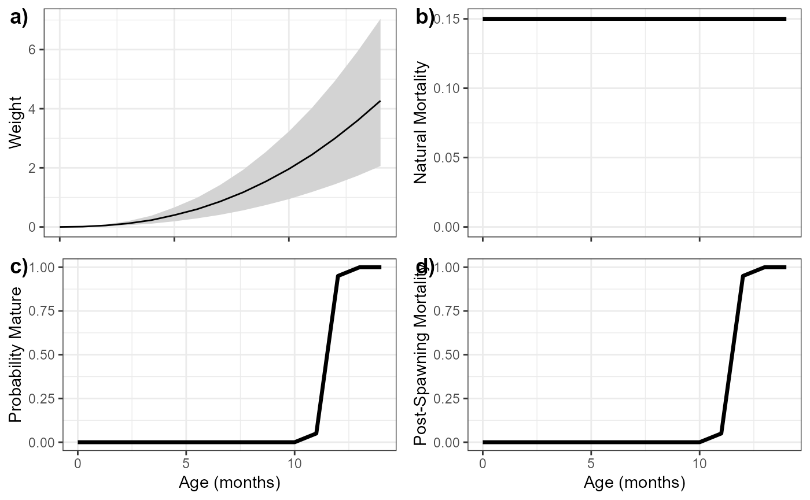
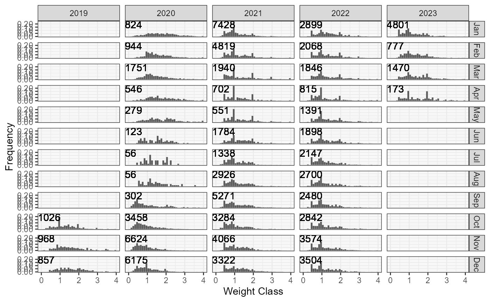
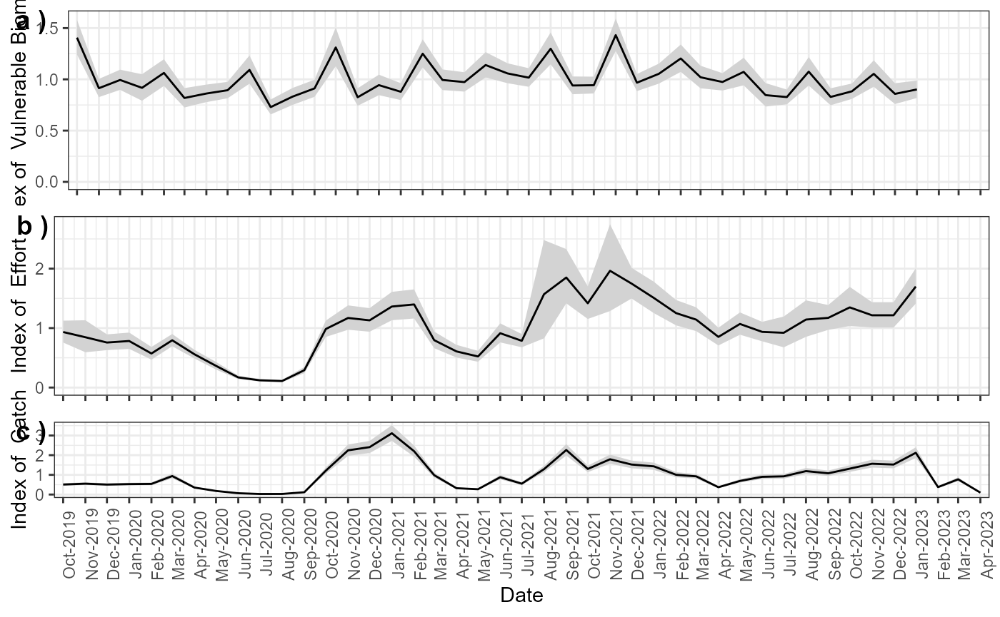
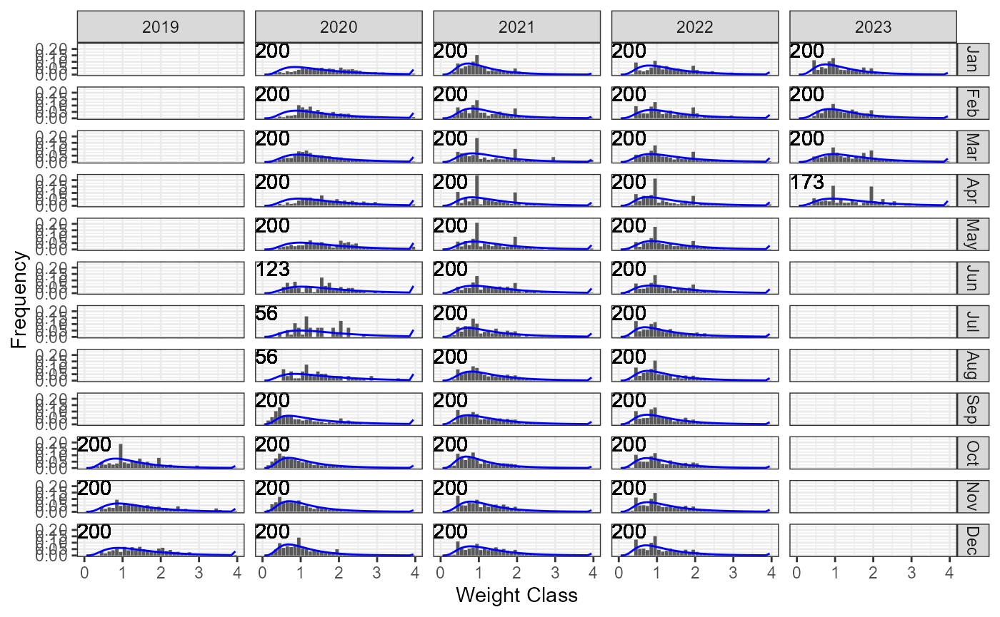
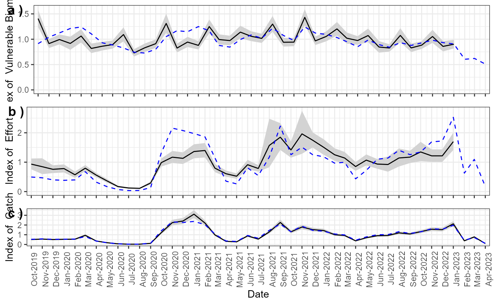
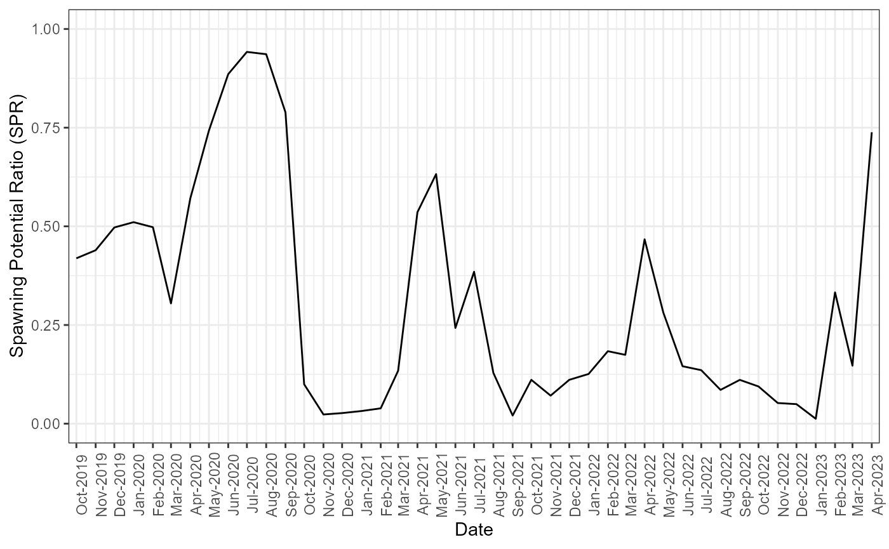

The SLAM package is designed to simulate fishery
dynamics and data, and to apply an age-structured assessment model to
fishery data for a short-lived semelparous species such as octopus.
SLAM is designed with a monthly time-step and to fit to
catch-at-weight data. If available, it will also fit to an index of
fishing effort. SLAM estimates the selectivity pattern,
fishing mortality (F), and the spawning potential ratio (SPR) for each
month, as well as reference points related to F and SPR.
The SLAM package can be installed directly from GitHub.
A couple of prerequisites are required to install SLAM from
GitHub. RTools is required because the package uses TMB. The
devtools package can check if RTools is installed on your
system:
# Load `devtools` if it's installed
chk <- require('devtools')
#> Loading required package: devtools
#> Loading required package: usethis
# install `devtools` if necessary
if (!chk) {
install.packages('devtools')
library('devtools')
}
# Check if RTools is installed
if (!devtools::find_rtools()) {
stop('RTools needs to be installed')
}If you get an error message after running the code above, you need to install RTools. Instructions for installing RTools for Windows machines are available here. A quick web search will find similar instructions for installing RTools on OS machines.
SLAM
Once RTools is installed, SLAM can be installed
with:
devtools::install_github('blue-matter/SLAM')SLAM to Fishery Data
In each new R session, the SLAM package must first be
loaded into memory:
library(SLAM)
#> Loading required package: dplyr
#>
#> Attaching package: 'dplyr'
#> The following objects are masked from 'package:stats':
#>
#> filter, lag
#> The following objects are masked from 'package:base':
#>
#> intersect, setdiff, setequal, unionFishery data is loaded into an object of class Data.
Fishery data can be loaded from a correctly structured CSV file.
The Import function can be used to import fishery data
from a correctly formatted CSV file.
The SLAM package includes a few files with example data.
The Example_Data function will print out the full file
paths to these example files:
Example_Data()
#> [1] "C:/Users/User/AppData/Local/R/win-library/4.2/SLAM/Data_Example.csv"
#> [2] "C:/Users/User/AppData/Local/R/win-library/4.2/SLAM/Data_Example_2.csv"
#> [3] "C:/Users/User/AppData/Local/R/win-library/4.2/SLAM/Data_Template.csv"You can examine the example files to see the specific format of the CSV files containing the example data. Data files must follow this same structure.
“Data_Template.csv” is an empty data file that can be used as a template for your data.
The data can be imported from the CSV file using the
Import function:
MyData <- Import(Example_Data()[2])Once you’ve imported a Data object, use the
Check function to check that everything is structured
correctly:
Check(MyData)
#> Data passes all checksThe CSV files containing the data for the SLAM model has
to be structured in a specific way. The easiest method for creating your
own data file is to copy and edit one of the example data files.
The sections below describe the structure of each section of the CSV file.
The first 7 rows of the CSV file contain the meta-data used for reporting.
The text in the first column must be exactly: ‘Field’, ‘Fishery’, ‘Location’, ‘Species’, ‘Common_Name’, ‘Author’, and ‘Date’.
The first row of the second column must say ‘Value’.
Enter the relevant meta-data information for your fishery in the remaining rows. Missing values are accepted.
The first column in row 9 must say ‘Age Schedules’. Row 10 must have the text ‘Ages’, ‘Weight_Age_Mean’, ‘Weight_Age_SD’, ‘Maturity_at_Age’, ‘M_at_Age’, ‘Post_Spawning_Mortality’ in columns 1 to 6. Enter the corresponding information in the rows below. There must be values for all ages (rows) and all columns.
Next, enter the catch-at-weight (CAW) data. The row with ‘CAW Binned Data’ in the first column indicates the beginning of the CAW Data. The row below this must have ‘Year’, ‘Month’, and then numeric values for the mid-points of the CAW bins. The CAW bins must increase sequentially with the same increment between each bin.
The Year and Month columns should increase sequentially by month. Months should be specified as integers. There can not be any missing months.
Enter the observed weight composition data for each month in the corresponding row. The default is to enter raw observed numbers, such that summing over the weight bins results in the total sample size for that month.
The CAW Data cannot have any missing rows.
The row with the text ‘Index Data’ in the first column indicates the beginning of the index time-series data. The row below this must have the text ‘Year’, ‘Month’, ‘Mean’, ‘SD’, and ‘Type’.
The ‘Year’ and ‘Month’ values must exactly match those for the CAW data (i.e., it must start and end at the same years and months as the CAW data).
Enter the mean value and the standard deviation (log-normal) for any available ‘Effort’, ‘Catch’, and/or ‘Biomass’ indices. Enter the corresponding type (‘Effort’, ‘Catch’, ‘Biomass’) in the ‘Type’ column.
The data-sets should appear below each other (e.g., first Effort then Catch).
Missing values should be indicated with NA.
The final information to enter is parameters for the assessment model. If the parameters are not provided, default values will be used.
The row with text ‘Parameters’, ‘Value’, and (optionally) ‘Description’ indicates the beginning of the parameters section. The first column below this should have the text: ‘Steepness’, ‘sigmaR’, ‘sigmaF’, and ‘sigmaR0’. Enter the corresponding values in the second column.
Once a Data object is complete, the assumed life-history
information, the weight composition data, and the indices (if any) can
be plotted:
plot_at_Age(MyData)
p <- plot_CAW(MyData)
p$p
plot_Indices(MyData)
The plot_CAW return a list with ggplot
object (p) and a data.frame containing the information
presented in the plots (df).
Now that the Data is imported and checked, we are ready to run the
SLAM assessment model. This is done with the
Assess function:
MyAssess <- Assess(MyData)
#> Parameters pass all checks
#> Index, Effort, and Catch detected. Only fitting to Index and Catch. Set `Data$Fit_Effort=1` to fit to Effort as well.The assessment output can be plotted, e.g.,:
p <- plot_CAW(MyAssess)
p$p
plot_Indices(MyAssess)
plot_SPR(MyAssess)
The Report function can also be used to generate an
Assessment Report:
Report(MyAssess)The example assessment report can be found here.